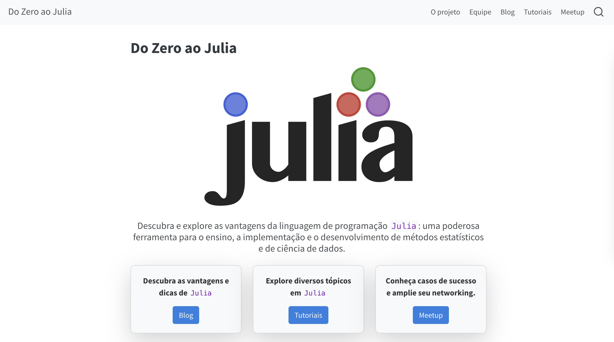

Julia para Ciência de Dados
Um guia introdutório para importar, transformar, analisar e modelar dados
Instrutores: Arthur da Silva (DMA), Henrique Velloso (DE) e Sarah Pereira (DMA).
7ª Semana da Matemática Aplicada (SEMAP),
Universidade Estadual de Campinas (UNICAMP)
Agosto de 2025
Por que Julia?
Por que escolher Julia?
- A linguagem de programação
Julia, lançada oficialmente em 2012, tem se destacado como uma alternativa moderna para ciência de dados e computação científica, competindo com linguagens comoMatlab,PythoneR; - É utilizada não apenas na academia, mas também fora dela.;
Juliaé gratuita;Juliaoferece desempenho próximo ao de C++, aliado à facilidade de aprendizado e sintaxe simples, comparáveis aPythoneR;Juliapermite escrever código com símbolos matemáticos diretamente 🤓, facilitando a expressão de conceitos científicos;Juliaresolve o problema das duas linguagens 🆒;- Etc.
Do Zero ao Julia

Importação de dados
Nesta seção veremos como importar nossos datasets, estando eles armazenados localmente ou online. Também veremos a diferença na leitura de diferentes formatos, como .csv, .txt e .xlsx.
Pacotes necessários
O Julia conta com diversos pacotes que usamos para leitura de datasets, dentre eles vamos focar nos seguintes:
DataFrames: Manipulação e análise de dados em formato tabular, similar ao pandas (Python) ou data.frame (R);CSV: Leitura e escrita de arquivos CSV de forma rápida e eficiente;XLSX: Leitura e escrita de arquivos Excel (.xlsx).
Funções básicas
Com os pacotes necessários instalados, agora vejamos como as funções de leitura funcionam:
Funções básicas
Podemos usar a função download() é usada para baixar um arquivo temporariamente e retorna o caminho local onde ele foi salvo.
Ex.:
Leitura da base de dados
Agora, vamos ler os dados que usaremos na aula de hoje.
Leitura da base de dados
```{julia}
#| output: true
#| eval: true
using DataFrames, TidierData
@chain dados begin
@slice(1:6)
end
```6×21 DataFrame
Row │ Column1 track_id artists album_name ⋯
│ Int64 String31 String? String? ⋯
─────┼──────────────────────────────────────────────────────────────────────────
1 │ 0 5SuOikwiRyPMVoIQDJUgSV Gen Hoshino Comedy ⋯
2 │ 1 4qPNDBW1i3p13qLCt0Ki3A Ben Woodward Ghost (Acousti
3 │ 2 1iJBSr7s7jYXzM8EGcbK5b Ingrid Michaelson;ZAYN To Begin Again
4 │ 3 6lfxq3CG4xtTiEg7opyCyx Kina Grannis Crazy Rich Asi
5 │ 4 5vjLSffimiIP26QG5WcN2K Chord Overstreet Hold On ⋯
6 │ 5 01MVOl9KtVTNfFiBU9I7dc Tyrone Wells Days I Will Re
18 columns omittedBanco de dados
Dados de faixas do Spotify
Vamos analisar um banco de dados de faixas do Spotify abrangendo 125 gêneros diferentes. Aqui estão as principais colunas do dataset:
track_name: Nome da faixa;
artists: Os nomes dos artistas que interpretaram a faixa. Se houver mais de um artista, eles serão separados por ‘;’ ;
album_name: O nome do álbum de onde a faixa pertence;
popularity: A popularidade de uma faixa é um valor entre 0 e 100, sendo 100 o mais popular, sendo calculada a partir (de forma geral) do número de streams daquela faixa, e o quão recente foram essas streams;
duration_ms: A duração da faixa em milissegundos;
danceability: A dançabilidade descreve o quão adequada uma faixa é para dançar com base em uma combinação de elementos musicais, incluindo andamento, estabilidade do ritmo, força da batida e regularidade geral. Um valor de 0,0 é o menos dançante e 1,0 o mais dançante;
Dados de faixas do Spotify
energy: Energia é uma medida de 0,0 a 1,0 e representa uma medida perceptual de intensidade e atividade. Normalmente, músicas energéticas parecem rápidas, altas e barulhentas. Por exemplo, o death metal tem alta energia, enquanto um prelúdio de Bach tem baixa pontuação na escala;
loudness: O volume total de uma faixa em decibéis (dB);
speechiness: Detecta a presença de palavras faladas em uma faixa. Quanto mais exclusivamente semelhante à fala for a gravação (por exemplo, talk show, audiolivro, poesia), mais próximo de 1,0 será o valor do atributo. Valores acima de 0,66 descrevem faixas que provavelmente são compostas inteiramente de palavras faladas. Valores entre 0,33 e 0,66 descrevem faixas que podem conter música e fala, seja em seções ou em camadas, incluindo casos como rap. Valores abaixo de 0,33 provavelmente representam música e outras faixas que não se assemelham à fala.
acousticness: Uma medida de confiança de 0,0 a 1,0 para determinar se a faixa é acústica. 1,0 representa alta confiança de que a faixa é acústica.
Dados de faixas do Spotify
valence: Uma medida de 0,0 a 1,0 que descreve a positividade musical transmitida por uma faixa. Faixas com alta valência soam mais positivas (por exemplo, felizes, alegres, eufóricas), enquanto faixas com baixa valência soam mais negativas (por exemplo, tristes, deprimidas, raivosas);
tempo: O andamento estimado geral de uma faixa em batidas por minuto (BPM);
track_genre: O gênero da faixa;
instrumentalness: Prevê se uma faixa não contém vocais. Sons de “Ooh” e “aah” são tratados como instrumentais neste contexto. Faixas de rap ou palavra falada são claramente “vocais”. Quanto mais próximo o valor de instrumentalidade estiver de 1,0, maior a probabilidade de a faixa não conter conteúdo vocal.
liveness: Detecta a presença de público na gravação. Valores mais altos de ao vivo representam uma probabilidade maior de que a faixa tenha sido tocada ao vivo. Um valor acima de 0,8 fornece alta probabilidade de que a faixa seja ao vivo.
Manipulação de banco de dados
Agora que temos o nosso dataset, vamos passar por algumas funções e pacotes que vão nos auxiliar na limpeza dos nossos dados!
Tidier.jl
A biblioteca Tidier.jl possui vários pacotes que auxiliam na manipulação e análise de datasets. Para quem está vindo do R, esses pacotes são bem similares e intuitivos. Aqui estão alguns dos pacotes:
TidierData: Implementação 100%Juliados pacotesdplyretidyrdoR. Usado na tranformação e manipulação dos dados;TidierPlots: Implementação 100%Juliado pacoteggplot2doR;TidierStrings: O objetivo deste pacote é replicar ostringrdoRemJuliade uma forma que funcione com o Tidier ou como uma função autônoma.
Acessem o link
https://tidierorg.github.io/Tidier.jl/v1.6.1/para mais informações!
Pacote TidierData.jl
Para a nossa análise de hoje, vamos utilizar principalmente o pacote TidierData.
Funções Macro
Para suportar a programação no estilo R, o TidierData.jl é implementado usando macros. Isso ocorre porque as macros são capazes de “capturar” o código antes de executá-lo, o que permite que o pacote suporte “expressões tidy” semelhantes ao R que, de outra forma, não seriam consideradas código Julia válido.
```{julia}
using TidierData
@chain dados begin
@filter(popularity > 50)
@arrange(desc("energy"))
@select(track_name, popularity, energy, acousticness)
@slice(1:5)
end
```5×4 DataFrame
Row │ track_name popularity energy acousticness
│ String? Int64 Float64 Float64
─────┼────────────────────────────────────────────────────────────────
1 │ Meeresrauschen zum Schlafen 52 0.999 0.554
2 │ Voodoo People 56 0.998 0.00128
3 │ Bleed 60 0.998 8.12e-6
4 │ Wait A Minute 58 0.998 0.0496
5 │ Hooked 52 0.998 0.0207Pacote TidierData.jl
Para quem já está familiarizado com a linguagem
R, a função@chain()é similar ao pipeline%>%ou|>, usado para encadear várias operações em sequência no mesmo conjunto de dados.@filter(): Filtra as linhas com base em uma restrição;@arrange(): Ordena as linhas com base em uma coluna (desc()para definir ordem crescente ou decrescente);@select(): Seleciona as colunas de interesse;@slice(): Seleciona as linhas para visualização.
Obs.: A função
desc()é uma função auxiliar.
Funções auxiliares
Algumas funções auxiliares do pacote que é importante citarmos:
across(): Aplica uma função a várias colunas de uma vez;n()erow_number(): Retornam o número total de linhas ou o número da linha;replace_missing(): Substitui valores ausentes em uma coluna por um valor especificado.
Outras funções auxiliares de outros pacotes que vale mencionar:
dropmissing(): Remove as linhas que contêm valores faltantes (missing);unique(): Retorna os valores distintos únicos de um vetor ou coluna, removendo duplicatas;nrow(): Retorna o número de linhas de um DataFrame ou matriz;any(): Testa se pelo menos um elemento de uma coleção (ou resultado de uma condição) é verdadeiro; retornatrueoufalse.
Limpeza do dataset do Spotify
Tratando valores faltantes
Dica: Use a função
any()e a funçãoismissingno formatorow -> any(ismissing, row)para verificar se há colunas sem informação. Nesse caso, a funçãofilter()da base doJuliaé mais eficiente, no formatofilter(condição, dados).
1×21 DataFrame
Row │ Column1 track_id artists album_name track_name popul ⋯
│ Int64 String31 String? String? String? Int64 ⋯
─────┼──────────────────────────────────────────────────────────────────────────
1 │ 65900 1kR4gIb7nGxHPI3D2ifs59 missing missing missing ⋯
16 columns omittedTratando valores faltantes
Vamos remover as linhas que possuem valores faltantes.
Tratando valores duplicados
Verificaremos possíveis faixas duplicadas, e retirá-las caso haja alguma.
```{julia}
#| output: true
using DataFrames, PrettyTables
nrow(unique(dados, :track_id)), nrow(dados)
```(89740, 113999)89740×21 DataFrame
Row │ Column1 track_id artists a ⋯
│ Int64 String31 String S ⋯
───────┼────────────────────────────────────────────────────────────────────────
1 │ 0 5SuOikwiRyPMVoIQDJUgSV Gen Hoshino C ⋯
2 │ 1 4qPNDBW1i3p13qLCt0Ki3A Ben Woodward G
3 │ 2 1iJBSr7s7jYXzM8EGcbK5b Ingrid Michaelson;ZAYN T
4 │ 3 6lfxq3CG4xtTiEg7opyCyx Kina Grannis C
5 │ 4 5vjLSffimiIP26QG5WcN2K Chord Overstreet H ⋯
6 │ 5 01MVOl9KtVTNfFiBU9I7dc Tyrone Wells D
7 │ 6 6Vc5wAMmXdKIAM7WUoEb7N A Great Big World;Christina Agui… I
8 │ 7 1EzrEOXmMH3G43AXT1y7pA Jason Mraz W
⋮ │ ⋮ ⋮ ⋮ ⋱
89734 │ 113993 4OkMK49i3NApR1KsAIsTf6 Chris Tomlin S ⋯
89735 │ 113994 4WbOUe6T0sozC7z5ZJgiAA Lucas Cervetti F
89736 │ 113995 2C3TZjDRiAzdyViavDJ217 Rainy Lullaby #
89737 │ 113996 1hIz5L4IB9hN3WRYPOCGPw Rainy Lullaby #
89738 │ 113997 6x8ZfSoqDjuNa5SVP5QjvX Cesária Evora B ⋯
89739 │ 113998 2e6sXL2bYv4bSz6VTdnfLs Michael W. Smith C
89740 │ 113999 2hETkH7cOfqmz3LqZDHZf5 Cesária Evora M
18 columns and 89725 rows omittedAnálise Exploratória de Dados (EDA)
EDA
Juliatorna possível compreender e explorar conjuntos de dados, identificando padrões, tendências e possíveis outliers antes da modelagem.Nesse tópico, iremos explorar as principais métricas estatísticas (média, mediana, desvio-padrão, etc.) e algumas distribuições discretas e contínuas.
Os pacotes
Statistics.jl,StatsBase.jl,DataFrames.jleTidierData.jlserão essenciais para a análise 🆒.
Medidas de tendência central
Julia tem como uma vantagem uma sintaxe muito similar a Python e R, o que torna seu processo de aprendizado muito mais rápido e eficiente! Algumas das principais medidas são:
mean(x)representa média aritméticamedian(x)representa a medianamode(x)representa a moda (pacoteStatsBase.jl)
Ex.:
Saída:
Medidas de dispersão
var(x)representa variânciastd(x)representa o desvio padrãominimum(x)emaximum(x)são os valores mínimo e máximoquantile(x, p)repesenta quantis (pé o parâmetro da posição relativa da distribuição)
Ex.:
Saída:
Contagem e frequência
length(x)é o número de elementoscount(cond, x)conta elementos que satisfazem uma condiçãocondcountmap(x)cria uma tabela de frequências (pacoteStatsBase.jl)
Ex.:
Saída:
Informações resumidas
describe(df)fornece estatísticas descritivas de um data framecor(x, y)descreve uma matriz de correlação entre duas variáveisxeycov(x, y)covariância das variáveisxey
df = DataFrame(
idade = [20, 25, 30, 35, 40],
altura = [1.70, 1.75, 1.80, 1.65, 1.90],
nome = ["Ana", "Bruno", "Carlos", "Daniela", "Eduardo"]
)
describe(df)Saída:
Análise descritiva do dataset
Dica: Para identificar os cinco artistas com maior número de faixas no dataset, utilize as funções
groupby()ecombine()para criar uma nova tabela contendo duas colunas: uma com o nome dos artistas e outra com a contagem de faixas. Em seguida, usesort!()para ordenar de forma decrescente efirst()para exibir apenas os primeiros registros.
Análise descritiva do dataset
Dica: Para filtrar as faixas de um artista específico, como George Jones, utilize
filter()em conjunto comoccursin()na coluna :artists. Depois, aplique a funçãodescribe()às variáveis numéricas para obter as estatísticas descritivas, como média, mediana, mínimo e máximo.
using Statistics, StatsPlots, Plots
df_george = filter(:artists => x -> occursin("George Jones", x), df)
vars_numericas = [:popularity, :duration_ms, :danceability, :energy,
:loudness, :speechiness, :acousticness, :instrumentalness,
:liveness, :valence, :tempo]
describe(select(df_george, vars_numericas))Visualizações estatísticas
O Julia oferece diversas bibliotecas para criar visualizações estatísticas de forma simples e flexível, permitindo a análise e interpretação de dados de maneira visual. Algumas bibliotecas populares incluem
Plots.jl,StatsPlots.jl,Makie.jleGadfly.jl.
Boxplot
bloxplot(x)resume a distribuição dos dados destacando mediana, quartis e possíveis outliers.
Ex.:
Saída:

Barplot (gráfico de barras)
bar(x)representa frequências ou valores médios para categorias.
Ex.:
Saída:

Histograma
histogram(x)exibe a distribuição de frequências de variáveis contínuas. Caso você não possua um conjunto de dados real, é possível gerar números pseudoaleatórios com o pacoteRandom.jle criar uma distribuição normal utilizando o pacoteDistributions.jl.
Ex.:
Saída:

Curva de densidade
- Para gerar a curva de densidade em
Julia, você pode usar o argumentonormalize=:pdfdentro da funçãohistogram():
Ex.:
Saída:

Gráfico de dispersão
scatter(x)mostra a relação entre duas variáveis numéricas.
Ex.:
Saída:

Matrizes de correlacão e mapas de calor
- Matriz de Correlação: Tabela que mostra o grau de correlação (associação linear) entre pares de variáveis numéricas.
- Mapa de Calor (Heatmap): Representação visual de uma matriz, onde os valores numéricos são exibidos como cores.
Por que usar?
- Identificar relações fortes ou fracas entre variáveis.
- Detectar multicolinearidade em análise estatística e modelagem.
- Facilitar a interpretação visual de grandes conjuntos de dados
Ex.:
using Random, StatsPlots
Random.seed!(123)
n = 50
A = randn(n) .* 10
B = A .* 0.5 .+ randn(n) .* 5
C = randn(n) .* 2
D = 0.8 .* A .- 0.3 .* C .+ randn(n)
df_rand = DataFrame(A=A, B=B, C=C, D=D)
corr_mat = cor(Matrix(df_rand))
heatmap(names(df_rand), names(df_rand), corr_mat;
c = :coolwarm, clim=(-1,1), aspect_ratio=1,
title="Matriz de Correlação (Dados Aleatórios)",
xlabel="", ylabel="", xrotation=45, yrotation=45)Saída:

Gerando gráficos do dataset
- Para o exercício 5, utilizamos a função
histogram()aplicada à nova variávelduration_min. Em seguida, normalizamos os valores para que a área total do histograma seja igual a 1, permitindo sobrepor e comparar com a curva de densidade.
using Statistics, StatsPlots, Plots
df.duration_min = df.duration_ms ./ 60000
histogram(df[!, :duration_min],
bins = 50,
xlabel = "Duração (min)",
ylabel = "Número de músicas",
title = "Distribuição da duração das músicas",
normalize = true,
legend = false)
density!(df[!, :duration_min], linewidth = 2, label = "Densidade")Saída:

Gerando gráficos do dataset
- O gráfico de heatmap foi construído a partir da matriz, utilizando rótulos correspondentes aos nomes das variáveis e aplicando um esquema de cores
(c = :coolwarm)para destacar relações positivas e negativas. Além disso, a escala foi definida no intervalo [-1, 1] e os nomes dos eixos foram rotacionados para facilitar a leitura.
using Statistics, StatsPlots, Plots
var_numericas = [:popularity, :duration_ms, :danceability, :energy,
:loudness, :speechiness, :acousticness, :instrumentalness,
:liveness, :valence, :tempo]
# Selecionar e limpar
numdf = select(df, variables)
# Matriz de correlação
corr_matrix = cor(Matrix(numdf))
# Heatmap
heatmap(String.(var_numericas), String.(var_numericas), corr_matrix;
c = :coolwarm, clim = (-1, 1), aspect_ratio = 1,
xlabel = "", ylabel = "", title = "Matriz de correlação",
xrotation = 45,
yrotation = 45)Saída:

Modelar
Regressão e Classificação
Referências

7ª SEMAP | Agosto de 2025 | www.ime.unicamp.br/julialang